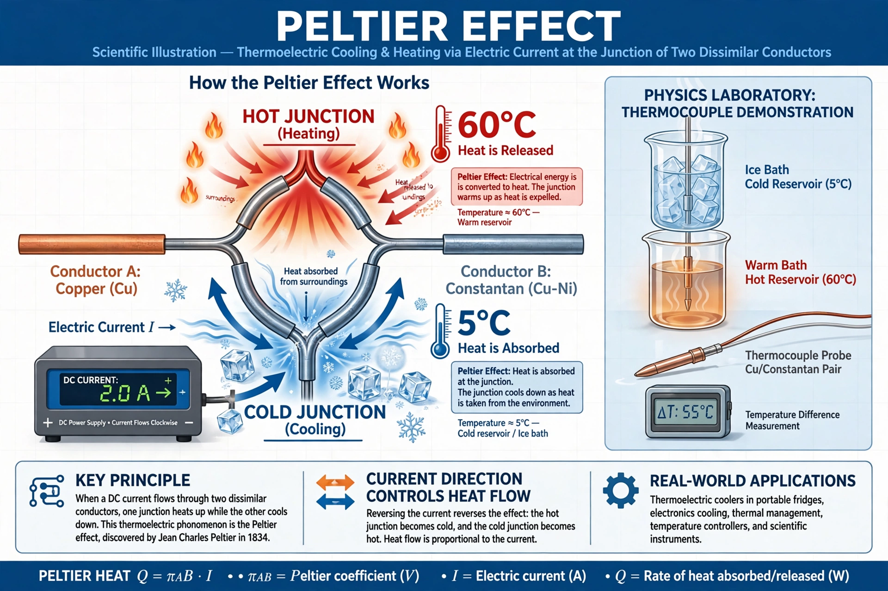

The Peltier effect is the presence of heating or cooling at an electrified junction of two different conductors, discovered by French physicist Jean Charles Athanase Peltier in 1834. It is the reverse of the Seebeck effect.

When current flows across a junction between two materials with different Peltier coefficients, heat is absorbed or released at a rate proportional to the current: Q = (ΠA − ΠB)·I. Carriers moving into a higher-energy state absorb heat (cooling); moving to a lower-energy state they release it.
Peltier devices — thermoelectric coolers made of bismuth telluride semiconductors — provide silent, vibration-free cooling in portable coolers, electronics, scientific instruments and wine cabinets, though their efficiency is lower than vapour-compression refrigeration. Reversed, they act as thermoelectric generators.